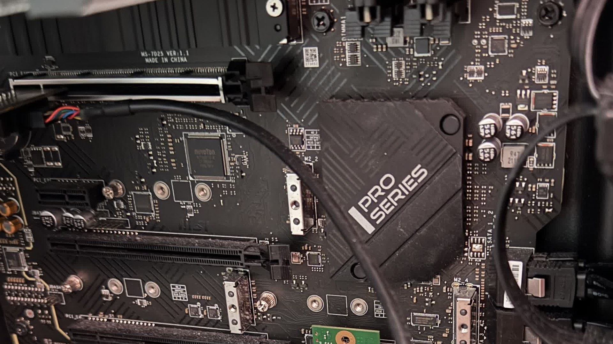
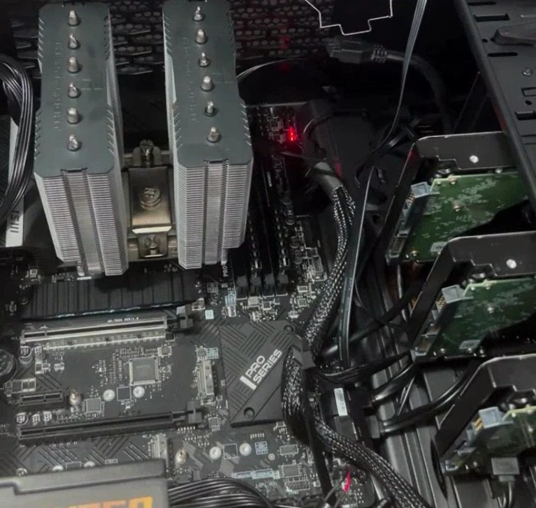
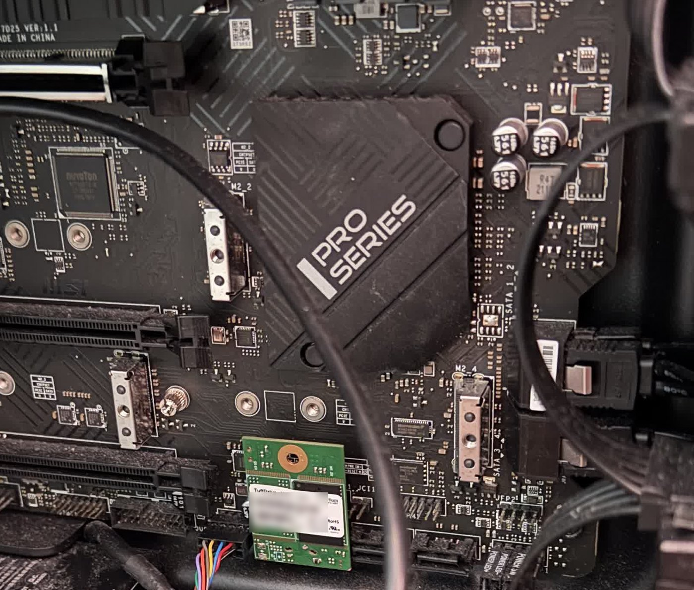
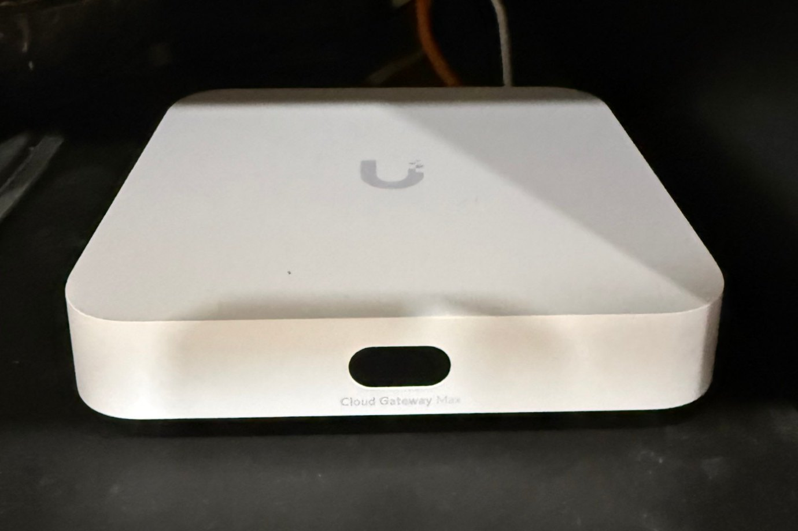
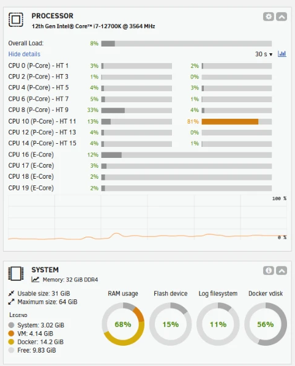
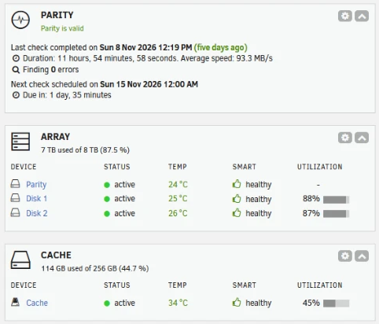

Homelab · Server and services
One server that hosts everything else
Every other part of the homelab runs on one Unraid server with more than twenty containers running. It holds my photos, files and media, and it hosts Home Assistant and the camera recorder that the rest of the system depends on.
- Running
- 20+containers now
- Deployed
- 50+containers over time
- Processor
- i7-12700Kintegrated graphics in use

The server and its jobs
Unraid is an operating system for home servers that runs each service in its own container. More than 20 containers run on it, out of more than 50 I have deployed over time. Grouped by the job each one does:
| Job | What does it | Notes |
|---|---|---|
| Smart home | Home Assistant | The hub. 33 active automations join about twenty systems. |
| Cameras and AI | Frigate, Scrypted | Frigate records and detects on a Google Coral and the integrated graphics. Scrypted bridges the doorbell into it. See Cameras and AI. |
| Photos | Immich, Immich Kiosk | Self-hosted photo library on PostgreSQL 16 with vector search, and a slideshow app. |
| Files | Nextcloud | Self-hosted file sync that replaced Google Drive for me. |
| Media playback | Remux, Jellyfin | Two media servers behind one interface, with hardware transcoding. |
| Remote access | Tunnel client, Tailscale | A tunnel client (frpc) to a cloud relay, and Tailscale for private access. See Remote access. |
The server also holds the chime sound files that play on the tablet and the TV when the screens switch to cameras.


I built the server myself and have kept working on it since. I added the Coral accelerator later for the camera system. When the original boot drive failed, I replaced it with a USB disk-on-module, a small flash module that plugs straight into a header on the motherboard, so the boot device now sits inside the case.





Photos and files
Immich is a self-hosted photo library. It runs on PostgreSQL 16 with vector search, and I kept it running through several database upgrades. Its photos feed Immich Kiosk, a slideshow app embedded as an iframe in the tablet dashboard. That slideshow is what the wall tablet and the TV show whenever nothing else needs the screen.
Nextcloud is self-hosted file sync. It replaced Google Drive for me. I first ran the Nextcloud all-in-one package and later moved to a standalone install.
Media playback
Two media servers sit behind one interface. Remux is the main server, and a separate Jellyfin server is integrated into it. I made Remux the main one because it has fewer moving parts to maintain. Jellyfin uses the Intel integrated graphics for hardware transcoding, and playback away from home goes through the relay and Tailscale.
A memory leak traced to one plugin
The plugin I first used to join the two servers leaked memory. I traced the runaway memory to that one plugin, dropped it, and integrated the second server another way.
Tools evaluated and retired
About 30 containers are stopped but kept as a record of what I tried. Three swaps were deliberate:
| Retired | Replaced by |
|---|---|
| Plex | Jellyfin |
| Twingate | Tailscale |
| Nextcloud all-in-one package | Standalone Nextcloud install |